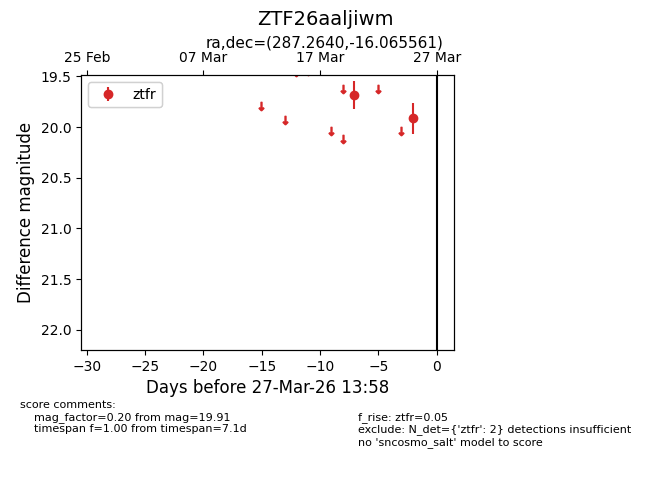
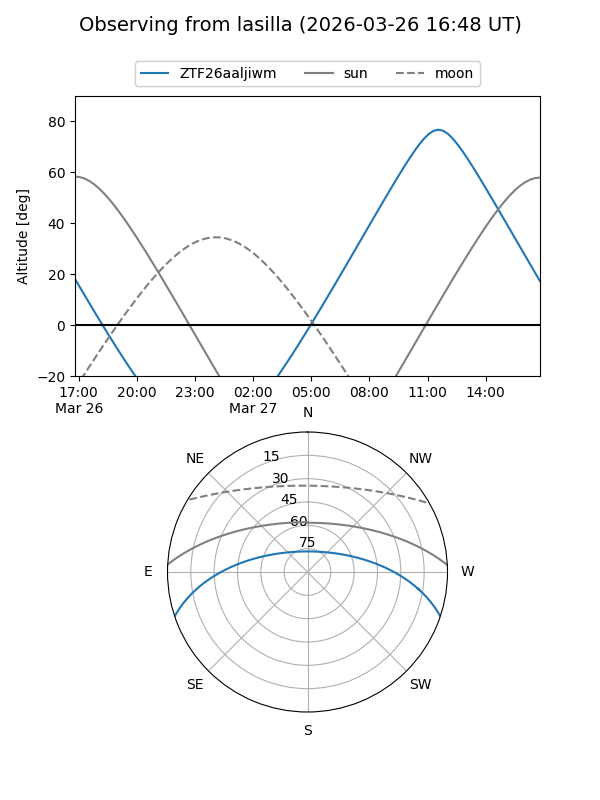
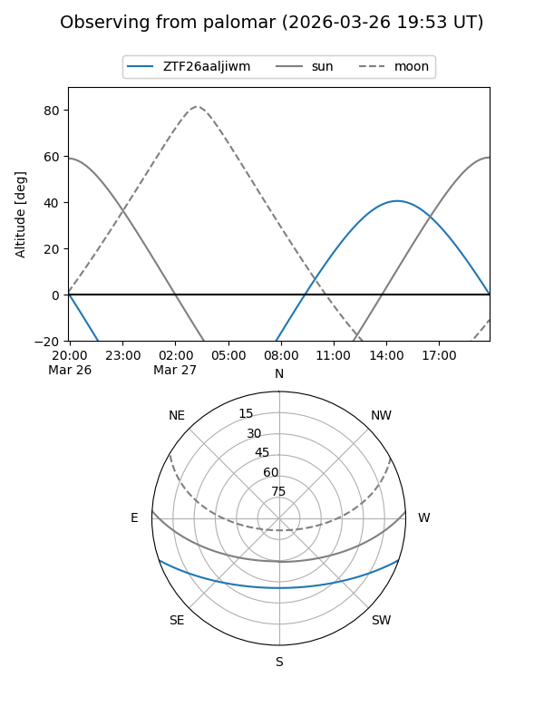

ZTF26aaljiwm
Target ZTF26aaljiwm at 2026-03-27 14:01
Aliases and brokers:
FINK: link
Lasair: link
ALeRCE: link
alt names
ZTF26aaljiwm (ztf,fink_ztf)
Coordinates:
equatorial (ra, dec) = 287.2640,-16.06556
equatorial (HMS+DMS) = 19:09:03.36,-16:03:56.02
galactic (l, b) = (20.4186,-11.06179)
Flags:
Photometry:
last ztfr=19.91
2 ztfr detections
Lightcurve

Visibility


Additional plots